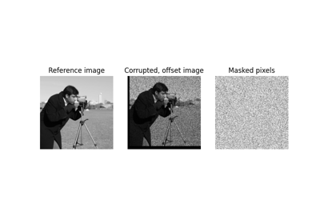
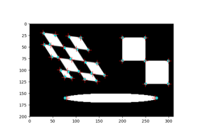
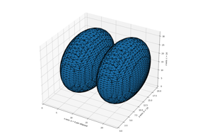
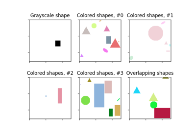

skimage.draw#
Generate Bezier curve coordinates. |
|
Generate circle perimeter coordinates. |
|
Generate anti-aliased circle perimeter coordinates. |
|
Generate coordinates of pixels within circle. |
|
Generate coordinates of pixels within ellipse. |
|
Generate ellipse perimeter coordinates. |
|
Generates ellipsoid with semimajor axes aligned with grid dimensions on grid with specified spacing. |
|
Calculates analytical surface area and volume for ellipsoid with semimajor axes aligned with grid dimensions of specified spacing. |
|
Generate line pixel coordinates. |
|
Generate anti-aliased line pixel coordinates. |
|
Draw a single-pixel thick line in n dimensions. |
|
Generate coordinates of pixels inside a polygon. |
|
Create a binary mask from a polygon. |
|
Generate polygon perimeter coordinates. |
|
Generate an image with random shapes, labeled with bounding boxes. |
|
Generate coordinates of pixels within a rectangle. |
|
Generate coordinates of pixels that are exactly around a rectangle. |
|
Set pixel color in the image at the given coordinates. |
- skimage.draw.bezier_curve(r0, c0, r1, c1, r2, c2, weight, shape=None)[source]#
Generate Bezier curve coordinates.
- Parameters:
- r0, c0int
Coordinates of the first control point.
- r1, c1int
Coordinates of the middle control point.
- r2, c2int
Coordinates of the last control point.
- weightdouble
Middle control point weight, it describes the line tension.
- shapetuple, optional
Image shape which is used to determine the maximum extent of output pixel coordinates. This is useful for curves that exceed the image size. If None, the full extent of the curve is used.
- Returns:
- rr, cc(N,) ndarray of int
Indices of pixels that belong to the Bezier curve. May be used to directly index into an array, e.g.
img[rr, cc] = 1.
Notes
The algorithm is the rational quadratic algorithm presented in reference [1].
References
[1]A Rasterizing Algorithm for Drawing Curves, A. Zingl, 2012 http://members.chello.at/easyfilter/Bresenham.pdf
Examples
>>> import numpy as np >>> from skimage.draw import bezier_curve >>> img = np.zeros((10, 10), dtype=np.uint8) >>> rr, cc = bezier_curve(1, 5, 5, -2, 8, 8, 2) >>> img[rr, cc] = 1 >>> img array([[0, 0, 0, 0, 0, 0, 0, 0, 0, 0], [0, 0, 0, 0, 0, 1, 0, 0, 0, 0], [0, 0, 0, 1, 1, 0, 0, 0, 0, 0], [0, 0, 1, 0, 0, 0, 0, 0, 0, 0], [0, 1, 0, 0, 0, 0, 0, 0, 0, 0], [0, 1, 0, 0, 0, 0, 0, 0, 0, 0], [0, 0, 1, 1, 0, 0, 0, 0, 0, 0], [0, 0, 0, 0, 1, 1, 1, 0, 0, 0], [0, 0, 0, 0, 0, 0, 0, 1, 1, 0], [0, 0, 0, 0, 0, 0, 0, 0, 0, 0]], dtype=uint8)

- skimage.draw.circle_perimeter(r, c, radius, method='bresenham', shape=None)[source]#
Generate circle perimeter coordinates.
- Parameters:
- r, cint
Centre coordinate of circle.
- radiusint
Radius of circle.
- method{‘bresenham’, ‘andres’}, optional
bresenham : Bresenham method (default) andres : Andres method
- shapetuple, optional
Image shape which is used to determine the maximum extent of output pixel coordinates. This is useful for circles that exceed the image size. If None, the full extent of the circle is used. Must be at least length 2. Only the first two values are used to determine the extent of the input image.
- Returns:
- rr, cc(N,) ndarray of int
Bresenham and Andres’ method: Indices of pixels that belong to the circle perimeter. May be used to directly index into an array, e.g.
img[rr, cc] = 1.
Notes
Andres method presents the advantage that concentric circles create a disc whereas Bresenham can make holes. There is also less distortions when Andres circles are rotated. Bresenham method is also known as midpoint circle algorithm. Anti-aliased circle generator is available with
circle_perimeter_aa.References
[1]J.E. Bresenham, “Algorithm for computer control of a digital plotter”, IBM Systems journal, 4 (1965) 25-30.
[2]E. Andres, “Discrete circles, rings and spheres”, Computers & Graphics, 18 (1994) 695-706.
Examples
>>> from skimage.draw import circle_perimeter >>> img = np.zeros((10, 10), dtype=np.uint8) >>> rr, cc = circle_perimeter(4, 4, 3) >>> img[rr, cc] = 1 >>> img array([[0, 0, 0, 0, 0, 0, 0, 0, 0, 0], [0, 0, 0, 1, 1, 1, 0, 0, 0, 0], [0, 0, 1, 0, 0, 0, 1, 0, 0, 0], [0, 1, 0, 0, 0, 0, 0, 1, 0, 0], [0, 1, 0, 0, 0, 0, 0, 1, 0, 0], [0, 1, 0, 0, 0, 0, 0, 1, 0, 0], [0, 0, 1, 0, 0, 0, 1, 0, 0, 0], [0, 0, 0, 1, 1, 1, 0, 0, 0, 0], [0, 0, 0, 0, 0, 0, 0, 0, 0, 0], [0, 0, 0, 0, 0, 0, 0, 0, 0, 0]], dtype=uint8)
- skimage.draw.circle_perimeter_aa(r, c, radius, shape=None)[source]#
Generate anti-aliased circle perimeter coordinates.
- Parameters:
- r, cint
Centre coordinate of circle.
- radiusint
Radius of circle.
- shapetuple, optional
Image shape which is used to determine the maximum extent of output pixel coordinates. This is useful for circles that exceed the image size. If None, the full extent of the circle is used. Must be at least length 2. Only the first two values are used to determine the extent of the input image.
- Returns:
- rr, cc, val(N,) ndarray (int, int, float)
Indices of pixels (rr, cc) and intensity values (val).
img[rr, cc] = val.
Notes
Wu’s method draws anti-aliased circle. This implementation doesn’t use lookup table optimization.
Use the function
draw.set_colorto applycircle_perimeter_aaresults to color images.References
[1]X. Wu, “An efficient antialiasing technique”, In ACM SIGGRAPH Computer Graphics, 25 (1991) 143-152.
Examples
>>> from skimage.draw import circle_perimeter_aa >>> img = np.zeros((10, 10), dtype=np.uint8) >>> rr, cc, val = circle_perimeter_aa(4, 4, 3) >>> img[rr, cc] = val * 255 >>> img array([[ 0, 0, 0, 0, 0, 0, 0, 0, 0, 0], [ 0, 0, 60, 211, 255, 211, 60, 0, 0, 0], [ 0, 60, 194, 43, 0, 43, 194, 60, 0, 0], [ 0, 211, 43, 0, 0, 0, 43, 211, 0, 0], [ 0, 255, 0, 0, 0, 0, 0, 255, 0, 0], [ 0, 211, 43, 0, 0, 0, 43, 211, 0, 0], [ 0, 60, 194, 43, 0, 43, 194, 60, 0, 0], [ 0, 0, 60, 211, 255, 211, 60, 0, 0, 0], [ 0, 0, 0, 0, 0, 0, 0, 0, 0, 0], [ 0, 0, 0, 0, 0, 0, 0, 0, 0, 0]], dtype=uint8)
>>> from skimage import data, draw >>> image = data.chelsea() >>> rr, cc, val = draw.circle_perimeter_aa(r=100, c=100, radius=75) >>> draw.set_color(image, (rr, cc), [1, 0, 0], alpha=val)
- skimage.draw.disk(center, radius, *, shape=None)[source]#
Generate coordinates of pixels within circle.
- Parameters:
- centertuple
Center coordinate of disk.
- radiusdouble
Radius of disk.
- shapetuple, optional
Image shape as a tuple of size 2. Determines the maximum extent of output pixel coordinates. This is useful for disks that exceed the image size. If None, the full extent of the disk is used. The shape might result in negative coordinates and wraparound behaviour.
- Returns:
- rr, ccndarray of int
Pixel coordinates of disk. May be used to directly index into an array, e.g.
img[rr, cc] = 1.
Examples
>>> import numpy as np >>> from skimage.draw import disk >>> shape = (4, 4) >>> img = np.zeros(shape, dtype=np.uint8) >>> rr, cc = disk((0, 0), 2, shape=shape) >>> img[rr, cc] = 1 >>> img array([[1, 1, 0, 0], [1, 1, 0, 0], [0, 0, 0, 0], [0, 0, 0, 0]], dtype=uint8) >>> img = np.zeros(shape, dtype=np.uint8) >>> # Negative coordinates in rr and cc perform a wraparound >>> rr, cc = disk((0, 0), 2, shape=None) >>> img[rr, cc] = 1 >>> img array([[1, 1, 0, 1], [1, 1, 0, 1], [0, 0, 0, 0], [1, 1, 0, 1]], dtype=uint8) >>> img = np.zeros((10, 10), dtype=np.uint8) >>> rr, cc = disk((4, 4), 5) >>> img[rr, cc] = 1 >>> img array([[0, 0, 1, 1, 1, 1, 1, 0, 0, 0], [0, 1, 1, 1, 1, 1, 1, 1, 0, 0], [1, 1, 1, 1, 1, 1, 1, 1, 1, 0], [1, 1, 1, 1, 1, 1, 1, 1, 1, 0], [1, 1, 1, 1, 1, 1, 1, 1, 1, 0], [1, 1, 1, 1, 1, 1, 1, 1, 1, 0], [1, 1, 1, 1, 1, 1, 1, 1, 1, 0], [0, 1, 1, 1, 1, 1, 1, 1, 0, 0], [0, 0, 1, 1, 1, 1, 1, 0, 0, 0], [0, 0, 0, 0, 0, 0, 0, 0, 0, 0]], dtype=uint8)

- skimage.draw.ellipse(r, c, r_radius, c_radius, shape=None, rotation=0.0)[source]#
Generate coordinates of pixels within ellipse.
- Parameters:
- r, cdouble
Centre coordinate of ellipse.
- r_radius, c_radiusdouble
Minor and major semi-axes.
(r/r_radius)**2 + (c/c_radius)**2 = 1.- shapetuple, optional
Image shape which is used to determine the maximum extent of output pixel coordinates. This is useful for ellipses which exceed the image size. By default the full extent of the ellipse are used. Must be at least length 2. Only the first two values are used to determine the extent.
- rotationfloat, optional (default 0.)
Set the ellipse rotation (rotation) in range (-PI, PI) in contra clock wise direction, so PI/2 degree means swap ellipse axis
- Returns:
- rr, ccndarray of int
Pixel coordinates of ellipse. May be used to directly index into an array, e.g.
img[rr, cc] = 1.
Notes
The ellipse equation:
((x * cos(alpha) + y * sin(alpha)) / x_radius) ** 2 + ((x * sin(alpha) - y * cos(alpha)) / y_radius) ** 2 = 1
Note that the positions of
ellipsewithout specified shape can have also, negative values, as this is correct on the plane. On the other hand using these ellipse positions for an image afterwards may lead to appearing on the other side of image, becauseimage[-1, -1] = image[end-1, end-1]>>> rr, cc = ellipse(1, 2, 3, 6) >>> img = np.zeros((6, 12), dtype=np.uint8) >>> img[rr, cc] = 1 >>> img array([[1, 1, 1, 1, 1, 1, 1, 1, 0, 1, 1, 1], [1, 1, 1, 1, 1, 1, 1, 1, 0, 1, 1, 1], [1, 1, 1, 1, 1, 1, 1, 1, 0, 1, 1, 1], [1, 1, 1, 1, 1, 1, 1, 0, 0, 0, 1, 1], [0, 0, 0, 0, 0, 0, 0, 0, 0, 0, 0, 0], [1, 1, 1, 1, 1, 1, 1, 0, 0, 0, 1, 1]], dtype=uint8)
Examples
>>> from skimage.draw import ellipse >>> img = np.zeros((10, 12), dtype=np.uint8) >>> rr, cc = ellipse(5, 6, 3, 5, rotation=np.deg2rad(30)) >>> img[rr, cc] = 1 >>> img array([[0, 0, 0, 0, 0, 0, 0, 0, 0, 0, 0, 0], [0, 0, 0, 0, 0, 0, 0, 0, 0, 0, 0, 0], [0, 0, 0, 0, 0, 0, 1, 1, 1, 1, 0, 0], [0, 0, 0, 0, 1, 1, 1, 1, 1, 1, 1, 0], [0, 0, 0, 1, 1, 1, 1, 1, 1, 1, 1, 0], [0, 0, 1, 1, 1, 1, 1, 1, 1, 1, 1, 0], [0, 0, 1, 1, 1, 1, 1, 1, 1, 1, 0, 0], [0, 0, 1, 1, 1, 1, 1, 1, 1, 0, 0, 0], [0, 0, 0, 1, 1, 1, 1, 0, 0, 0, 0, 0], [0, 0, 0, 0, 0, 0, 0, 0, 0, 0, 0, 0]], dtype=uint8)
Masked Normalized Cross-Correlation
Masked Normalized Cross-CorrelationCorner detection


- skimage.draw.ellipse_perimeter(r, c, r_radius, c_radius, orientation=0, shape=None)[source]#
Generate ellipse perimeter coordinates.
- Parameters:
- r, cint
Centre coordinate of ellipse.
- r_radius, c_radiusint
Minor and major semi-axes.
(r/r_radius)**2 + (c/c_radius)**2 = 1.- orientationdouble, optional
Major axis orientation in clockwise direction as radians.
- shapetuple, optional
Image shape which is used to determine the maximum extent of output pixel coordinates. This is useful for ellipses that exceed the image size. If None, the full extent of the ellipse is used. Must be at least length 2. Only the first two values are used to determine the extent of the input image.
- Returns:
- rr, cc(N,) ndarray of int
Indices of pixels that belong to the ellipse perimeter. May be used to directly index into an array, e.g.
img[rr, cc] = 1.
References
[1]A Rasterizing Algorithm for Drawing Curves, A. Zingl, 2012 http://members.chello.at/easyfilter/Bresenham.pdf
Examples
>>> from skimage.draw import ellipse_perimeter >>> img = np.zeros((10, 10), dtype=np.uint8) >>> rr, cc = ellipse_perimeter(5, 5, 3, 4) >>> img[rr, cc] = 1 >>> img array([[0, 0, 0, 0, 0, 0, 0, 0, 0, 0], [0, 0, 0, 0, 0, 0, 0, 0, 0, 0], [0, 0, 0, 1, 1, 1, 1, 1, 0, 0], [0, 0, 1, 0, 0, 0, 0, 0, 1, 0], [0, 1, 0, 0, 0, 0, 0, 0, 0, 1], [0, 1, 0, 0, 0, 0, 0, 0, 0, 1], [0, 1, 0, 0, 0, 0, 0, 0, 0, 1], [0, 0, 1, 0, 0, 0, 0, 0, 1, 0], [0, 0, 0, 1, 1, 1, 1, 1, 0, 0], [0, 0, 0, 0, 0, 0, 0, 0, 0, 0]], dtype=uint8)
Note that the positions of
ellipsewithout specified shape can have also, negative values, as this is correct on the plane. On the other hand using these ellipse positions for an image afterwards may lead to appearing on the other side of image, becauseimage[-1, -1] = image[end-1, end-1]>>> rr, cc = ellipse_perimeter(2, 3, 4, 5) >>> img = np.zeros((9, 12), dtype=np.uint8) >>> img[rr, cc] = 1 >>> img array([[0, 0, 0, 0, 0, 0, 0, 1, 0, 0, 0, 1], [0, 0, 0, 0, 0, 0, 0, 0, 1, 0, 1, 0], [0, 0, 0, 0, 0, 0, 0, 0, 1, 0, 1, 0], [0, 0, 0, 0, 0, 0, 0, 0, 1, 0, 1, 0], [0, 0, 0, 0, 0, 0, 0, 1, 0, 0, 0, 1], [1, 0, 0, 0, 0, 0, 1, 0, 0, 0, 0, 0], [0, 1, 1, 1, 1, 1, 0, 0, 0, 0, 0, 0], [0, 1, 1, 1, 1, 1, 0, 0, 0, 0, 0, 0], [1, 0, 0, 0, 0, 0, 1, 0, 0, 0, 0, 0]], dtype=uint8)
- skimage.draw.ellipsoid(a, b, c, spacing=(1.0, 1.0, 1.0), levelset=False)[source]#
Generates ellipsoid with semimajor axes aligned with grid dimensions on grid with specified spacing.
- Parameters:
- afloat
Length of semimajor axis aligned with x-axis.
- bfloat
Length of semimajor axis aligned with y-axis.
- cfloat
Length of semimajor axis aligned with z-axis.
- spacing3-tuple of floats
Spacing in three spatial dimensions.
- levelsetbool
If True, returns the level set for this ellipsoid (signed level set about zero, with positive denoting interior) as np.float64. False returns a binarized version of said level set.
- Returns:
- ellipsoid(M, N, P) array
Ellipsoid centered in a correctly sized array for given spacing. Boolean dtype unless levelset=True, in which case a float array is returned with the level set above 0.0 representing the ellipsoid.
Marching Cubes
- skimage.draw.ellipsoid_stats(a, b, c)[source]#
Calculates analytical surface area and volume for ellipsoid with semimajor axes aligned with grid dimensions of specified spacing.
- Parameters:
- afloat
Length of semimajor axis aligned with x-axis.
- bfloat
Length of semimajor axis aligned with y-axis.
- cfloat
Length of semimajor axis aligned with z-axis.
- Returns:
- volfloat
Calculated volume of ellipsoid.
- surffloat
Calculated surface area of ellipsoid.
- skimage.draw.line(r0, c0, r1, c1)[source]#
Generate line pixel coordinates.
- Parameters:
- r0, c0int
Starting position (row, column).
- r1, c1int
End position (row, column).
- Returns:
- rr, cc(N,) ndarray of int
Indices of pixels that belong to the line. May be used to directly index into an array, e.g.
img[rr, cc] = 1.
Notes
Anti-aliased line generator is available with
line_aa.Examples
>>> from skimage.draw import line >>> img = np.zeros((10, 10), dtype=np.uint8) >>> rr, cc = line(1, 1, 8, 8) >>> img[rr, cc] = 1 >>> img array([[0, 0, 0, 0, 0, 0, 0, 0, 0, 0], [0, 1, 0, 0, 0, 0, 0, 0, 0, 0], [0, 0, 1, 0, 0, 0, 0, 0, 0, 0], [0, 0, 0, 1, 0, 0, 0, 0, 0, 0], [0, 0, 0, 0, 1, 0, 0, 0, 0, 0], [0, 0, 0, 0, 0, 1, 0, 0, 0, 0], [0, 0, 0, 0, 0, 0, 1, 0, 0, 0], [0, 0, 0, 0, 0, 0, 0, 1, 0, 0], [0, 0, 0, 0, 0, 0, 0, 0, 1, 0], [0, 0, 0, 0, 0, 0, 0, 0, 0, 0]], dtype=uint8)
- skimage.draw.line_aa(r0, c0, r1, c1)[source]#
Generate anti-aliased line pixel coordinates.
- Parameters:
- r0, c0int
Starting position (row, column).
- r1, c1int
End position (row, column).
- Returns:
- rr, cc, val(N,) ndarray (int, int, float)
Indices of pixels (rr, cc) and intensity values (val).
img[rr, cc] = val.
References
[1]A Rasterizing Algorithm for Drawing Curves, A. Zingl, 2012 http://members.chello.at/easyfilter/Bresenham.pdf
Examples
>>> from skimage.draw import line_aa >>> img = np.zeros((10, 10), dtype=np.uint8) >>> rr, cc, val = line_aa(1, 1, 8, 8) >>> img[rr, cc] = val * 255 >>> img array([[ 0, 0, 0, 0, 0, 0, 0, 0, 0, 0], [ 0, 255, 74, 0, 0, 0, 0, 0, 0, 0], [ 0, 74, 255, 74, 0, 0, 0, 0, 0, 0], [ 0, 0, 74, 255, 74, 0, 0, 0, 0, 0], [ 0, 0, 0, 74, 255, 74, 0, 0, 0, 0], [ 0, 0, 0, 0, 74, 255, 74, 0, 0, 0], [ 0, 0, 0, 0, 0, 74, 255, 74, 0, 0], [ 0, 0, 0, 0, 0, 0, 74, 255, 74, 0], [ 0, 0, 0, 0, 0, 0, 0, 74, 255, 0], [ 0, 0, 0, 0, 0, 0, 0, 0, 0, 0]], dtype=uint8)
- skimage.draw.line_nd(start, stop, *, endpoint=False, integer=True)[source]#
Draw a single-pixel thick line in n dimensions.
The line produced will be ndim-connected. That is, two subsequent pixels in the line will be either direct or diagonal neighbors in n dimensions.
- Parameters:
- startarray-like, shape (N,)
The start coordinates of the line.
- stoparray-like, shape (N,)
The end coordinates of the line.
- endpointbool, optional
Whether to include the endpoint in the returned line. Defaults to False, which allows for easy drawing of multi-point paths.
- integerbool, optional
Whether to round the coordinates to integer. If True (default), the returned coordinates can be used to directly index into an array. False could be used for e.g. vector drawing.
- Returns:
- coordstuple of arrays
The coordinates of points on the line.
Examples
>>> lin = line_nd((1, 1), (5, 2.5), endpoint=False) >>> lin (array([1, 2, 3, 4]), array([1, 1, 2, 2])) >>> im = np.zeros((6, 5), dtype=int) >>> im[lin] = 1 >>> im array([[0, 0, 0, 0, 0], [0, 1, 0, 0, 0], [0, 1, 0, 0, 0], [0, 0, 1, 0, 0], [0, 0, 1, 0, 0], [0, 0, 0, 0, 0]]) >>> line_nd([2, 1, 1], [5, 5, 2.5], endpoint=True) (array([2, 3, 4, 4, 5]), array([1, 2, 3, 4, 5]), array([1, 1, 2, 2, 2]))
- skimage.draw.polygon(r, c, shape=None)[source]#
Generate coordinates of pixels inside a polygon.
- Parameters:
- r(N,) array_like
Row coordinates of the polygon’s vertices.
- c(N,) array_like
Column coordinates of the polygon’s vertices.
- shapetuple, optional
Image shape which is used to determine the maximum extent of output pixel coordinates. This is useful for polygons that exceed the image size. If None, the full extent of the polygon is used. Must be at least length 2. Only the first two values are used to determine the extent of the input image.
- Returns:
- rr, ccndarray of int
Pixel coordinates of polygon. May be used to directly index into an array, e.g.
img[rr, cc] = 1.
See also
polygon2maskCreate a binary mask from a polygon.
Notes
This function ensures that rr and cc don’t contain negative values. Pixels of the polygon that whose coordinates are smaller 0, are not drawn.
Examples
>>> import skimage as ski >>> r = np.array([1, 2, 8]) >>> c = np.array([1, 7, 4]) >>> rr, cc = ski.draw.polygon(r, c) >>> img = np.zeros((10, 10), dtype=int) >>> img[rr, cc] = 1 >>> img array([[0, 0, 0, 0, 0, 0, 0, 0, 0, 0], [0, 1, 0, 0, 0, 0, 0, 0, 0, 0], [0, 0, 1, 1, 1, 1, 1, 1, 0, 0], [0, 0, 1, 1, 1, 1, 1, 0, 0, 0], [0, 0, 0, 1, 1, 1, 1, 0, 0, 0], [0, 0, 0, 1, 1, 1, 0, 0, 0, 0], [0, 0, 0, 0, 1, 1, 0, 0, 0, 0], [0, 0, 0, 0, 1, 0, 0, 0, 0, 0], [0, 0, 0, 0, 1, 0, 0, 0, 0, 0], [0, 0, 0, 0, 0, 0, 0, 0, 0, 0]])
If the image shape is defined and vertices / points of the
polygonare outside this coordinate space, only a part (or none at all) of the polygon’s pixels is returned. Shifting the polygon’s vertices by an offset can be used to move the polygon around and potentially draw an arbitrary sub-region of the polygon.>>> offset = (2, -4) >>> rr, cc = ski.draw.polygon(r - offset[0], c - offset[1], shape=img.shape) >>> img = np.zeros((10, 10), dtype=int) >>> img[rr, cc] = 1 >>> img array([[0, 0, 0, 0, 0, 0, 1, 1, 1, 1], [0, 0, 0, 0, 0, 0, 1, 1, 1, 1], [0, 0, 0, 0, 0, 0, 0, 1, 1, 1], [0, 0, 0, 0, 0, 0, 0, 1, 1, 1], [0, 0, 0, 0, 0, 0, 0, 0, 1, 1], [0, 0, 0, 0, 0, 0, 0, 0, 1, 0], [0, 0, 0, 0, 0, 0, 0, 0, 1, 0], [0, 0, 0, 0, 0, 0, 0, 0, 0, 0], [0, 0, 0, 0, 0, 0, 0, 0, 0, 0], [0, 0, 0, 0, 0, 0, 0, 0, 0, 0]])
- skimage.draw.polygon2mask(image_shape, polygon)[source]#
Create a binary mask from a polygon.
- Parameters:
- image_shapetuple of size 2
The shape of the mask.
- polygon(N, 2) array_like
The polygon coordinates of shape (N, 2) where N is the number of points. The coordinates are (row, column).
- Returns:
- mask2-D ndarray of type ‘bool’
The binary mask that corresponds to the input polygon.
See also
polygonGenerate coordinates of pixels inside a polygon.
Notes
This function does not do any border checking. Parts of the polygon that are outside the coordinate space defined by image_shape are not drawn.
Examples
>>> import skimage as ski >>> image_shape = (10, 10) >>> polygon = np.array([[1, 1], [2, 7], [8, 4]]) >>> mask = ski.draw.polygon2mask(image_shape, polygon) >>> mask.astype(int) array([[0, 0, 0, 0, 0, 0, 0, 0, 0, 0], [0, 1, 0, 0, 0, 0, 0, 0, 0, 0], [0, 0, 1, 1, 1, 1, 1, 1, 0, 0], [0, 0, 1, 1, 1, 1, 1, 0, 0, 0], [0, 0, 0, 1, 1, 1, 1, 0, 0, 0], [0, 0, 0, 1, 1, 1, 0, 0, 0, 0], [0, 0, 0, 0, 1, 1, 0, 0, 0, 0], [0, 0, 0, 0, 1, 0, 0, 0, 0, 0], [0, 0, 0, 0, 1, 0, 0, 0, 0, 0], [0, 0, 0, 0, 0, 0, 0, 0, 0, 0]])
If vertices / points of the
polygonare outside the coordinate space defined by image_shape, only a part (or none at all) of the polygon is drawn in the mask.>>> offset = np.array([[2, -4]]) >>> ski.draw.polygon2mask(image_shape, polygon - offset).astype(int) array([[0, 0, 0, 0, 0, 0, 1, 1, 1, 1], [0, 0, 0, 0, 0, 0, 1, 1, 1, 1], [0, 0, 0, 0, 0, 0, 0, 1, 1, 1], [0, 0, 0, 0, 0, 0, 0, 1, 1, 1], [0, 0, 0, 0, 0, 0, 0, 0, 1, 1], [0, 0, 0, 0, 0, 0, 0, 0, 1, 0], [0, 0, 0, 0, 0, 0, 0, 0, 1, 0], [0, 0, 0, 0, 0, 0, 0, 0, 0, 0], [0, 0, 0, 0, 0, 0, 0, 0, 0, 0], [0, 0, 0, 0, 0, 0, 0, 0, 0, 0]])
- skimage.draw.polygon_perimeter(r, c, shape=None, clip=False)[source]#
Generate polygon perimeter coordinates.
- Parameters:
- r(N,) ndarray
Row coordinates of vertices of polygon.
- c(N,) ndarray
Column coordinates of vertices of polygon.
- shapetuple, optional
Image shape which is used to determine maximum extents of output pixel coordinates. This is useful for polygons that exceed the image size. If None, the full extents of the polygon is used. Must be at least length 2. Only the first two values are used to determine the extent of the input image.
- clipbool, optional
Whether to clip the polygon to the provided shape. If this is set to True, the drawn figure will always be a closed polygon with all edges visible.
- Returns:
- rr, ccndarray of int
Pixel coordinates of polygon. May be used to directly index into an array, e.g.
img[rr, cc] = 1.
Examples
>>> from skimage.draw import polygon_perimeter >>> img = np.zeros((10, 10), dtype=np.uint8) >>> rr, cc = polygon_perimeter([5, -1, 5, 10], ... [-1, 5, 11, 5], ... shape=img.shape, clip=True) >>> img[rr, cc] = 1 >>> img array([[0, 0, 0, 0, 1, 1, 1, 0, 0, 0], [0, 0, 0, 1, 0, 0, 0, 1, 0, 0], [0, 0, 1, 0, 0, 0, 0, 0, 1, 0], [0, 1, 0, 0, 0, 0, 0, 0, 0, 1], [1, 0, 0, 0, 0, 0, 0, 0, 0, 1], [1, 0, 0, 0, 0, 0, 0, 0, 0, 1], [1, 0, 0, 0, 0, 0, 0, 0, 0, 1], [0, 1, 1, 0, 0, 0, 0, 0, 0, 1], [0, 0, 0, 1, 0, 0, 0, 1, 1, 0], [0, 0, 0, 0, 1, 1, 1, 0, 0, 0]], dtype=uint8)
- skimage.draw.random_shapes(image_shape, max_shapes, min_shapes=1, min_size=2, max_size=None, num_channels=3, shape=None, intensity_range=None, allow_overlap=False, num_trials=100, rng=None, *, channel_axis=-1)[source]#
Generate an image with random shapes, labeled with bounding boxes.
The image is populated with random shapes with random sizes, random locations, and random colors, with or without overlap.
Shapes have random (row, col) starting coordinates and random sizes bounded by min_size and max_size. It can occur that a randomly generated shape will not fit the image at all. In that case, the algorithm will try again with new starting coordinates a certain number of times. However, it also means that some shapes may be skipped altogether. In that case, this function will generate fewer shapes than requested.
- Parameters:
- image_shapetuple
The number of rows and columns of the image to generate.
- max_shapesint
The maximum number of shapes to (attempt to) fit into the shape.
- min_shapesint, optional
The minimum number of shapes to (attempt to) fit into the shape.
- min_sizeint, optional
The minimum dimension of each shape to fit into the image.
- max_sizeint, optional
The maximum dimension of each shape to fit into the image.
- num_channelsint, optional
Number of channels in the generated image. If 1, generate monochrome images, else color images with multiple channels. Ignored if
multichannelis set to False.- shape{rectangle, circle, triangle, ellipse, None} str, optional
The name of the shape to generate or None to pick random ones.
- intensity_range{tuple of tuples of uint8, tuple of uint8}, optional
The range of values to sample pixel values from. For grayscale images the format is (min, max). For multichannel - ((min, max),) if the ranges are equal across the channels, and ((min_0, max_0), … (min_N, max_N)) if they differ. As the function supports generation of uint8 arrays only, the maximum range is (0, 255). If None, set to (0, 254) for each channel reserving color of intensity = 255 for background.
- allow_overlapbool, optional
If True, allow shapes to overlap.
- num_trialsint, optional
How often to attempt to fit a shape into the image before skipping it.
- rng{
numpy.random.Generator, int}, optional Pseudo-random number generator. By default, a PCG64 generator is used (see
numpy.random.default_rng()). If rng is an int, it is used to seed the generator.- channel_axisint or None, optional
If None, the image is assumed to be a grayscale (single channel) image. Otherwise, this parameter indicates which axis of the array corresponds to channels.
Added in version 0.19:
channel_axiswas added in 0.19.
- Returns:
- imageuint8 array
An image with the fitted shapes.
- labelslist
A list of labels, one per shape in the image. Each label is a (category, ((r0, r1), (c0, c1))) tuple specifying the category and bounding box coordinates of the shape.
Examples
>>> import skimage.draw >>> image, labels = skimage.draw.random_shapes((32, 32), max_shapes=3) >>> image array([ [[255, 255, 255], [255, 255, 255], [255, 255, 255], ..., [255, 255, 255], [255, 255, 255], [255, 255, 255]]], dtype=uint8) >>> labels [('circle', ((22, 18), (25, 21))), ('triangle', ((5, 6), (13, 13)))]
Random Shapes
- skimage.draw.rectangle(start, end=None, extent=None, shape=None)[source]#
Generate coordinates of pixels within a rectangle.
- Parameters:
- starttuple
Origin point of the rectangle, e.g.,
([plane,] row, column).- endtuple
End point of the rectangle
([plane,] row, column). For a 2D matrix, the slice defined by the rectangle is[start:(end+1)]. Either end or extent must be specified.- extenttuple
The extent (size) of the drawn rectangle. E.g.,
([num_planes,] num_rows, num_cols). Either end or extent must be specified. A negative extent is valid, and will result in a rectangle going along the opposite direction. If extent is negative, the start point is not included.- shapetuple, optional
Image shape used to determine the maximum bounds of the output coordinates. This is useful for clipping rectangles that exceed the image size. By default, no clipping is done.
- Returns:
- coordsarray of int, shape (Ndim, Npoints)
The coordinates of all pixels in the rectangle.
Notes
This function can be applied to N-dimensional images, by passing start and end or extent as tuples of length N.
Examples
>>> import numpy as np >>> from skimage.draw import rectangle >>> img = np.zeros((5, 5), dtype=np.uint8) >>> start = (1, 1) >>> extent = (3, 3) >>> rr, cc = rectangle(start, extent=extent, shape=img.shape) >>> img[rr, cc] = 1 >>> img array([[0, 0, 0, 0, 0], [0, 1, 1, 1, 0], [0, 1, 1, 1, 0], [0, 1, 1, 1, 0], [0, 0, 0, 0, 0]], dtype=uint8)
>>> img = np.zeros((5, 5), dtype=np.uint8) >>> start = (0, 1) >>> end = (3, 3) >>> rr, cc = rectangle(start, end=end, shape=img.shape) >>> img[rr, cc] = 1 >>> img array([[0, 1, 1, 1, 0], [0, 1, 1, 1, 0], [0, 1, 1, 1, 0], [0, 1, 1, 1, 0], [0, 0, 0, 0, 0]], dtype=uint8)
>>> import numpy as np >>> from skimage.draw import rectangle >>> img = np.zeros((6, 6), dtype=np.uint8) >>> start = (3, 3) >>> >>> rr, cc = rectangle(start, extent=(2, 2)) >>> img[rr, cc] = 1 >>> rr, cc = rectangle(start, extent=(-2, 2)) >>> img[rr, cc] = 2 >>> rr, cc = rectangle(start, extent=(-2, -2)) >>> img[rr, cc] = 3 >>> rr, cc = rectangle(start, extent=(2, -2)) >>> img[rr, cc] = 4 >>> print(img) [[0 0 0 0 0 0] [0 3 3 2 2 0] [0 3 3 2 2 0] [0 4 4 1 1 0] [0 4 4 1 1 0] [0 0 0 0 0 0]]
- skimage.draw.rectangle_perimeter(start, end=None, extent=None, shape=None, clip=False)[source]#
Generate coordinates of pixels that are exactly around a rectangle.
- Parameters:
- starttuple
Origin point of the inner rectangle, e.g.,
(row, column).- endtuple
End point of the inner rectangle
(row, column). For a 2D matrix, the slice defined by inner the rectangle is[start:(end+1)]. Either end or extent must be specified.- extenttuple
The extent (size) of the inner rectangle. E.g.,
(num_rows, num_cols). Either end or extent must be specified. Negative extents are permitted. Seerectangleto better understand how they behave.- shapetuple, optional
Image shape used to determine the maximum bounds of the output coordinates. This is useful for clipping perimeters that exceed the image size. By default, no clipping is done. Must be at least length 2. Only the first two values are used to determine the extent of the input image.
- clipbool, optional
Whether to clip the perimeter to the provided shape. If this is set to True, the drawn figure will always be a closed polygon with all edges visible.
- Returns:
- coordsarray of int, shape (2, Npoints)
The coordinates of all pixels in the rectangle.
Examples
>>> import numpy as np >>> from skimage.draw import rectangle_perimeter >>> img = np.zeros((5, 6), dtype=np.uint8) >>> start = (2, 3) >>> end = (3, 4) >>> rr, cc = rectangle_perimeter(start, end=end, shape=img.shape) >>> img[rr, cc] = 1 >>> img array([[0, 0, 0, 0, 0, 0], [0, 0, 1, 1, 1, 1], [0, 0, 1, 0, 0, 1], [0, 0, 1, 0, 0, 1], [0, 0, 1, 1, 1, 1]], dtype=uint8)
>>> img = np.zeros((5, 5), dtype=np.uint8) >>> r, c = rectangle_perimeter(start, (10, 10), shape=img.shape, clip=True) >>> img[r, c] = 1 >>> img array([[0, 0, 0, 0, 0], [0, 0, 1, 1, 1], [0, 0, 1, 0, 1], [0, 0, 1, 0, 1], [0, 0, 1, 1, 1]], dtype=uint8)
- skimage.draw.set_color(image, coords, color, alpha=1)[source]#
Set pixel color in the image at the given coordinates.
Note that this function modifies the color of the image in-place. Coordinates that exceed the shape of the image will be ignored.
- Parameters:
- image(M, N, C) ndarray
Image
- coordstuple of ((K,) ndarray, (K,) ndarray)
Row and column coordinates of pixels to be colored.
- color(C,) ndarray
Color to be assigned to coordinates in the image.
- alphascalar or (K,) ndarray
Alpha values used to blend color with image. 0 is transparent, 1 is opaque.
Examples
>>> from skimage.draw import line, set_color >>> img = np.zeros((10, 10), dtype=np.uint8) >>> rr, cc = line(1, 1, 20, 20) >>> set_color(img, (rr, cc), 1) >>> img array([[0, 0, 0, 0, 0, 0, 0, 0, 0, 0], [0, 1, 0, 0, 0, 0, 0, 0, 0, 0], [0, 0, 1, 0, 0, 0, 0, 0, 0, 0], [0, 0, 0, 1, 0, 0, 0, 0, 0, 0], [0, 0, 0, 0, 1, 0, 0, 0, 0, 0], [0, 0, 0, 0, 0, 1, 0, 0, 0, 0], [0, 0, 0, 0, 0, 0, 1, 0, 0, 0], [0, 0, 0, 0, 0, 0, 0, 1, 0, 0], [0, 0, 0, 0, 0, 0, 0, 0, 1, 0], [0, 0, 0, 0, 0, 0, 0, 0, 0, 1]], dtype=uint8)